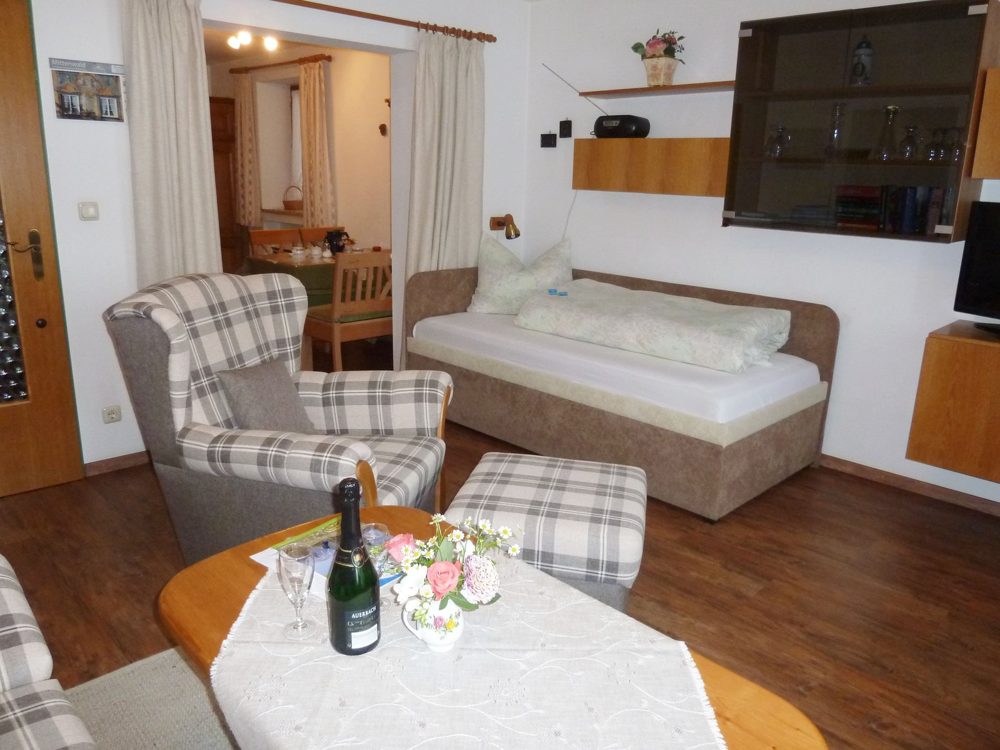
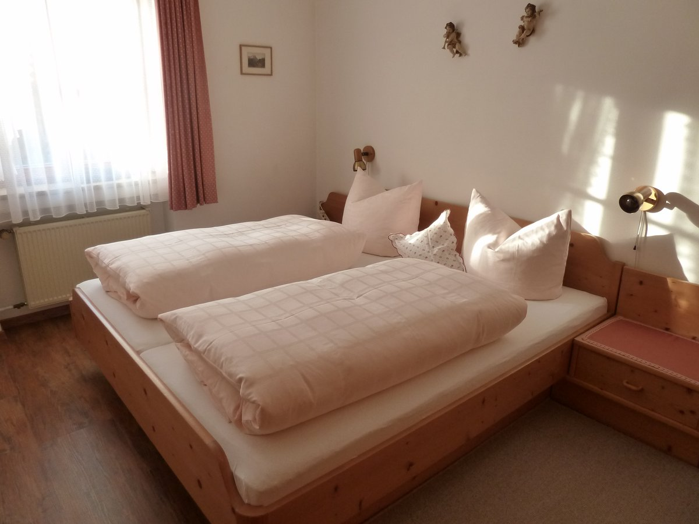
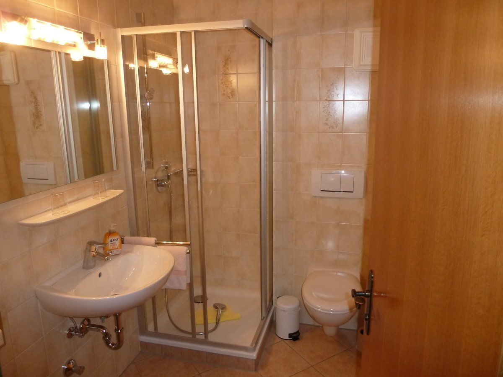

Ferienwohnung im Parterre
47 m² · 2–3 Personen · separates Schlafzimmer · ebenerdig · Garten am Haus
Ebenerdig gelegen, mit separatem Schlafzimmer. Der Garten am Haus ist für sonnige Stunden mit Gartenmöbeln ausgestattet.
- Wohnküche
- Dusche und WC
- Garten und Parkplatz am Haus
- Freies WLAN
- Sat-TV, DVD-Player, Radio
- Getrennte Betten möglich
- Bettwäsche und Handtücher
- Kein Teppichboden
2 Personen, ab 5 Nächten
60 € / Nacht
3 Personen, ab 5 Nächten
67 € / Nacht
Inklusive Küchen- und Badezimmerwäsche, Endreinigung und WLAN. Zuzüglich Kurtaxe. In der Vor- und Nachsaison 10 % Ermäßigung, Kinderermäßigung auf Anfrage.